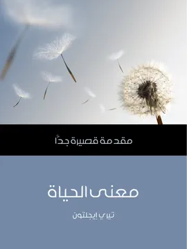

معنى الحياة: مقدمة قصيرة جدًّا

قراءة عربية أصلية محددة النطاق في الصفحات 9 إلى 14 من ملف PDF المرتبط، وليست تلخيصا كاملا للكتاب. نناقش ما تدعمه هذه المقاطع فقط.
هل للحياة معنى؟ سؤال يستحق الضحك والجد معًا
يعترف إيجلتون من البداية بأن من الأفضل لأي شخص لديه من روح المجازفة ما يكفي لتأليف كتاب بهذا العنوان أن يُعد نفسه لاستقبال حقيبة بريد مكتظة بخطابات مكتوبة بخط يدوي غريب تحوي رسومًا تخطيطية رمزية معقدة؛ فمعنى الحياة موضوع يناسب إما مَن بهم مَسّ من الجنون أو الكوميديين، ويتمنى أن يكون أقرب للمعسكر الأخير من الأول. يقول إنه حاول جاهدًا أن يعالج موضوعًا ذا أفكار سامية بأكبر قدر ممكن من المرح والوضوح مع التعامل معه بجدية في الوقت نفسه، فثمة شيء مبالغ فيه بشكل سخيف بشأن الموضوع برمته مقارنة بالنطاق المصغر للمعرفة العلمية الأكاديمية. ويستدعي ذاكرة طلبته في كمبريدج حين لفت انتباهه عنوان رسالة دكتوراه نصها «بعض جوانب الجهاز المهبلي للبرغوث»، ويعلق بأن المرء قد يُخمّن أن هذا العمل لم يكن الأنسب لضعاف البصر، لكنه أظهر قدرًا جذابًا من التواضع الذي عجز عن التعلم منه بوضوح. بشجاعة ورشاقة تنتقل الصفحات من التهكم الساخر إلى الجد، في ترجمة شيماء طه الريدي لهذه المقدمة القصيرة جدًا لسؤال الفلسفة الأكبر.
زاوية وحدود القراءة
قراءة موجزة من ص ٩ إلى ص ١٤ من أصل ١٠٤ صفحة، تعرض تمهيد المؤلف الساخر لمسألة معنى الحياة، لا الكتاب كاملًا.
الطبعة والقراءة
هذه الترجمة العربية صادرة ومتاحة مجانًا بموجب اتفاق قانوني بين مؤسسة هنداوي ودار نشر جامعة أكسفورد. حقوق الترجمة محفوظة لمؤسسة هنداوي.
تنزيل PDF المجاني ↓ القراءة والمصدر الرسمي ↗